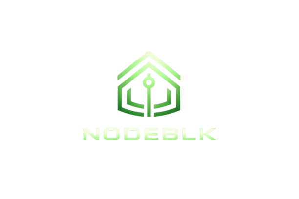

01
Real World Guidance
Built to deliver practical information fast — survival references, emergency pathways, local utility, and clear next-step guidance when time matters.

A pocket-ready platform for real world guidance, offline-first tools, and fast-access knowledge built around the Raspberry Pi Zero 2 W. Same premium layout direction, now pushed into a more futuristic and tech-forward product experience.

Product Story
Built to deliver practical information fast — survival references, emergency pathways, local utility, and clear next-step guidance when time matters.
NodeBlk is intended to stay useful even when internet access drops away. Core screens and essential tools should remain quick, readable, and low-friction.

Using the Raspberry Pi Zero 2 W and a suitable battery solution gives NodeBlk a clear prototype path while still making the site feel premium and future-ready.
System View
I kept this part interactive so the site feels more digital and product-driven. Visitors can switch between hardware, software, and user experience messaging without leaving the page.
Interaction Layer
I pushed the motion, glow, grid treatment, terminal details, and switchable UI sections so the page feels more like a modern hardware startup product site instead of a static landing page.
Site Direction
The site keeps the premium storytelling approach from before, but the interaction language is now sharper: more interface-driven, more system-like, and more aligned with a futuristic device launch.
Next Step
This version is ready to use as a standalone NodeBlk site. Replace the placeholder images with your real renders and you will have a stronger, more futuristic presentation for demos, outreach, and investor conversations.